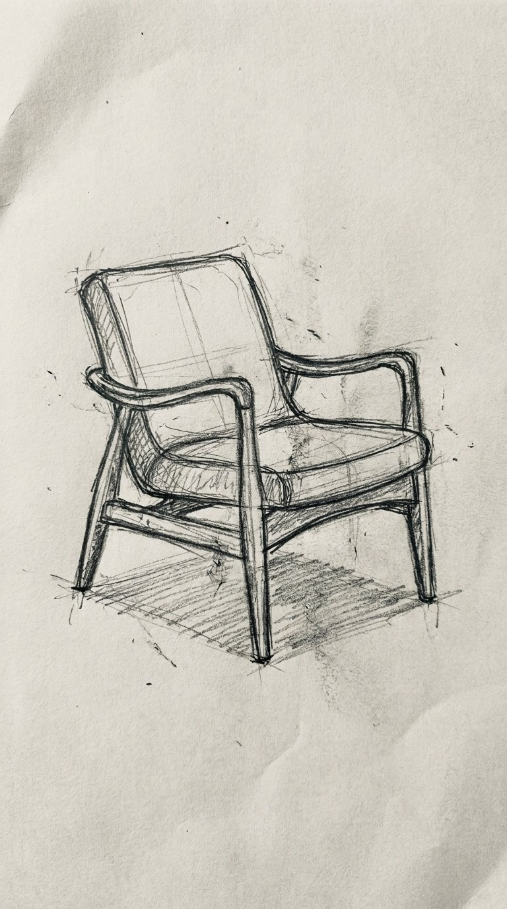
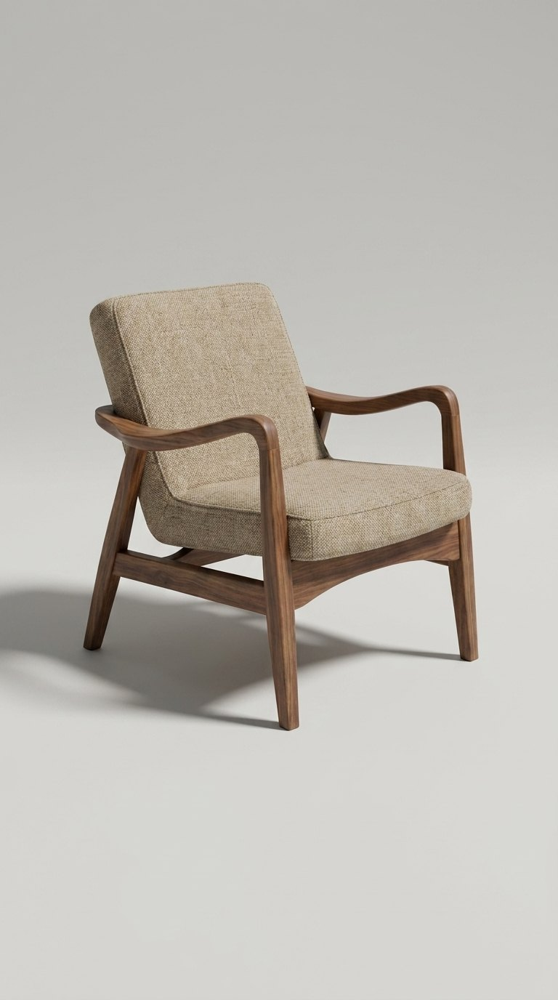

A step-by-step guide to turning a hand-drawn sketch into a photorealistic image with Nano Banana Pro, Google's Gemini 3 Pro Image model.
What it does: Google describes the capability as "turning sketches into products or blueprints into photorealistic 3D structures", bridging "the gap between concept and creation." What it produces is a plausible photorealistic render of your drawing, not a measured or manufacturable spec (see Part 03).
Part 01 · Do it
From pencil lines to a product shot
This is a real test we ran for this guide. The sketch on the left was generated as a rough graphite drawing, then handed straight back to Nano Banana Pro with the prompt in step 3. Nothing was retouched between the two images.

The sketch

The render
Both images generated by ARKIV AI with Nano Banana Pro (gemini-3-pro-image) via the Gemini API for this guide. Not a Google marketing image.
01Open Gemini and pick the right mode
Go to gemini.google.com or the Gemini app. Select Create images with the Thinking model. That combination is what routes you to Nano Banana Pro. Free accounts get limited quotas and then fall back to the original Nano Banana; Google AI Plus, Pro, and Ultra get higher quotas.
02Upload your sketch
Attach a photo of your drawing. Rough is genuinely fine, stray construction lines and smudges included. What matters is that the silhouette and the main features are readable. Shoot it flat and evenly lit so the pencil reads dark against the paper.
03Use this prompt
Replace the bracketed part with what you drew, then submit.
Turn this pencil sketch into a photorealistic photograph of the same [object]. Keep the exact silhouette, proportions, camera angle and design details of the drawing. Render it as a real physical object with true materials and texture, natural studio lighting, and a soft shadow on a clean neutral surface. Same framing as the sketch. No text, no logos, no watermarks.
04Check the silhouette, not the polish
The render will almost always look good. The thing to actually check is whether it still matches your drawing: same outline, same angle, same details in the same places. If it drifted, say what changed and ask again rather than accepting a prettier but different object.
05Download it
Hover the finished image and use the download option for the full-size file.
Naming the object helps. The model renders a sketch more faithfully when it knows what it is looking at. "A mid-century walnut armchair" gets you closer than "this thing", because the lines get interpreted as wood and woven fabric instead of guessed at.
Part 02 · Get it closer
Making the render match the drawing
Tell it the materials
A pencil sketch has no colour and no material information, so anything you do not specify is invented. If you know what the thing is made of, say so and the guessing stops.
The frame is walnut, the cushion is oatmeal linen, and the legs are matte black steel. Use exactly those materials and colours, and do not change the shape.
Show it more than one angle
Nano Banana Pro can blend up to 14 images and hold consistency across up to 5 people in one composition. If you sketched your object from two or three sides, upload them together and ask for a single render that respects all of them. That is the most reliable way to stop it inventing the parts your first drawing never showed.
These sketches are the same object from different angles. Use all of them to build one photorealistic render of it. Where the angles disagree, follow the clearest drawing.
Ask for the shot, not just the object
The model handles colour grading, camera angles, and bokeh, and it renders legible text in-image across multiple languages. So you can direct the photograph itself, not only the subject.
Shoot it as a catalogue product photo: three-quarter angle, soft window light from the left, shallow depth of field with a gently blurred background, warm neutral grade.
Part 03 · Before you use it for anything real
Watermarks, and what a render is not
A render is not a spec. Turning a sketch photoreal makes your idea look finished; it does not make it engineered. Dimensions, joinery, load, tolerances, and material behaviour are all invented to look plausible. Treat the output as a concept visual, never as a manufacturing drawing or proof that the thing works as drawn.
✓Every image carries Google's imperceptible SynthID watermark. Free and Google AI Pro tiers also get a visible Gemini sparkle watermark; it is removed for Google AI Ultra subscribers and for images from AI Studio.
✓You can check whether an image came from Google AI by uploading it to the Gemini app and asking, which works via SynthID.
✓Watch for brand marks you did not ask for. Sketch something in a heavily branded category, like a sneaker, and the render can come back wearing a real company's logo. We hit this while making this guide. If you plan to publish the result, say "no logos, no brand marks" in the prompt and check the output before using it.
✓Don't present a render as a photograph of something that exists. It is a picture of an idea.
Availability, model routing ("Create images" with the "Thinking" model), quota tiers, the 14-image and 5-person limits, text rendering, colour grading, camera angle, bokeh, and the SynthID and visible-watermark rules on this page are all from that source. The sketch-to-photoreal quote is Google's own wording.
The before/after pair in Part 01 is an original generation ARKIV AI ran for this guide. The prompts are written by ARKIV AI and are not official Google prompts.